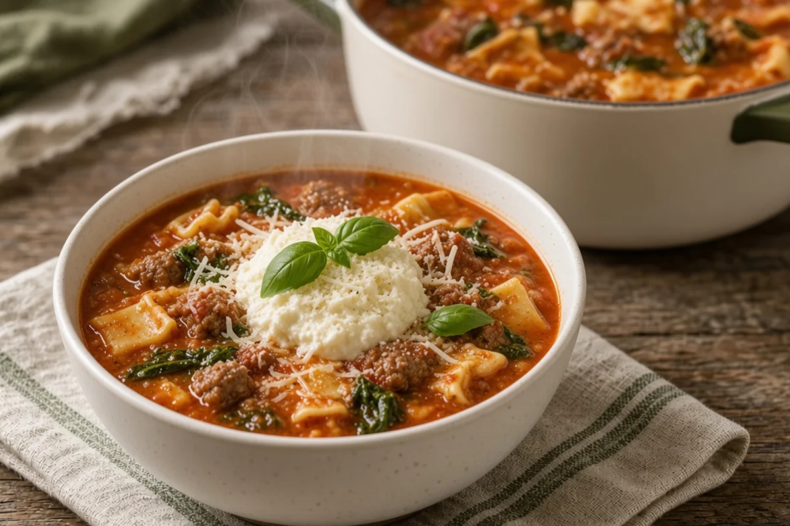

Lasagna Soup
Weeknight lasagna in a bowl: browned beef and Italian sausage, broken noodles, and a marinara broth, finished with a ricotta-mozzarella scoop that melts at the table.

Adapted from Tastes Better From Scratch
By
Yield: 7 servings
Prep:
Cook:
Total:
Difficulty: Easy
Gear: Large HexClad pot or Dutch oven, wooden spoon, small bowl
Ingredients
- 1/2 lb lean ground beef
- 1/2 lb ground Italian sausage
- salt and freshly ground black pepper, to taste
- 1 yellow onion, chopped
- 1 Tbsp olive oil
- 3 cloves garlic, minced
- 2 Tbsp tomato paste
- 1 recipe homemade marinara sauce (or 24 ounce marinara sauce)
- 1/4 tsp red pepper flakes
- 2 Tbsp fresh parsley, chopped (or 2 tsp dried)
- 1/2 tsp dried oregano
- 1 tsp dried basil
- 7 cups low sodium chicken broth (or vegetable broth)
- 9 lasagna noodles, broken into pieces
- 2 cups fresh spinach leaves, optional
- 10 oz ricotta cheese (or cottage cheese)
- 1 cup shredded mozzarella cheese
- 1/2 cup freshly grated parmesan cheese
- fresh basil, for serving
Instructions
- In a large HexClad pot over medium-high heat, cook the ground beef and Italian sausage, seasoning with salt and black pepper as they brown, until no pink remains, 6 to 8 minutes. Drain the grease and move the meat to a bowl.
- Heat the olive oil in the same pot over medium heat. Add the onion and cook, stirring occasionally, until it is soft and translucent, about 5 minutes. Stir in the garlic and cook until fragrant, 1 minute.
- Stir in the tomato paste, marinara sauce, red pepper flakes, parsley, oregano, basil, and chicken broth, then return the meat to the pot.
- Bring the soup to a steady boil. Add the lasagna noodles (broken into fourths), drop the heat to medium-low, and cook, stirring occasionally so the noodles do not stick, until they are tender, about 10 to 12 minutes. Stir in the spinach, if using, and cook until just wilted.
- In a small bowl, stir together the ricotta, mozzarella, and Parmesan until combined.
- Ladle the hot soup into bowls, dollop a scoop of the cheese mixture on top, and finish with fresh basil.
Notes: Use a large pot; you are starting with about 10 cups of liquid once the broth and marinara are in, and the noodles need room to move. The tomato paste is just for body, not your main liquid, so bring the soup to a full boil before the noodles go in and stir now and then so they do not clump. Leftovers thicken in the fridge as the noodles keep drinking broth; loosen with a splash of broth when you reheat. The cheese mixture is best added at the table so it stays creamy.